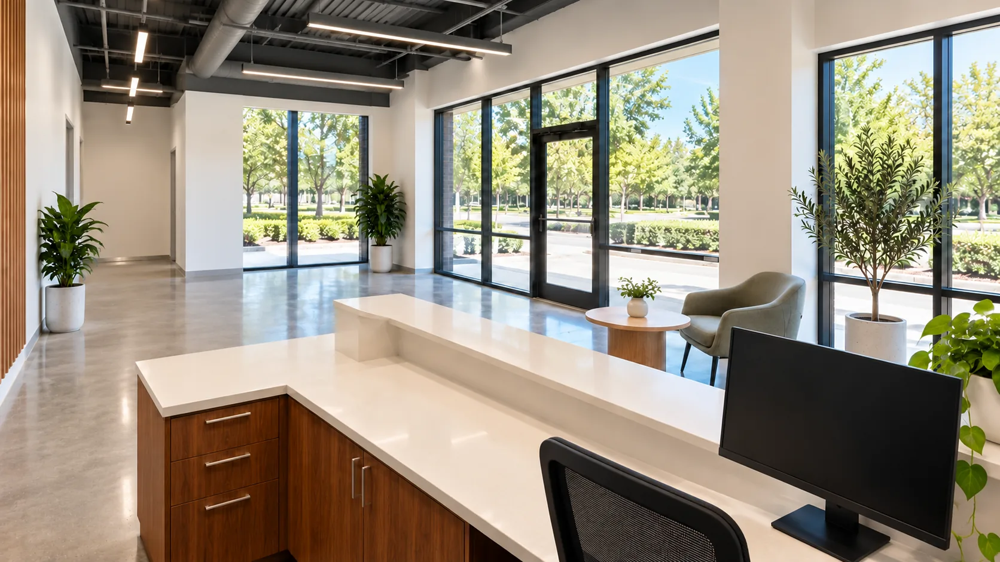

01 / CommercialAsk about this project
Tenant Improvements
GRIDLINE turns leased shells and second-generation spaces into finished offices, studios and shops: framing and drywall, ceilings, lighting, HVAC and plumbing changes, finishes, and the accessibility work the permit requires.
Helpful to have ready
Your lease work letter, the building’s tenant standards, and any drawings from your architect.
What we’ll go over
What the landlord provides and what you pay for, the building systems we’ll tie into, and how long permits are taking in your city.